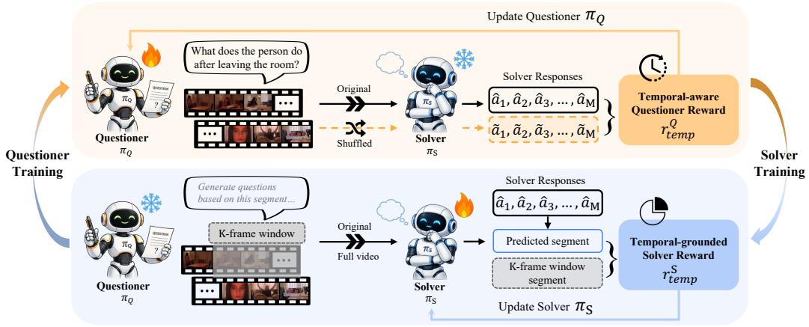

Figure 1: Comparison between supervised RL, VANILLA self-evolving frameworks, and EvoVidFigure 1: Comparison between supervised RL, VANILLA self-evolving frameworks, and EvoVid. Left: Supervised RL relies on human-annotated tasks and solutions to construct reward signals, making training costly and inherently bounded by human expertise. Middle: VANILLA self-evolving frameworks, primarily designed for static modalities, i.e., images, generate generic and often singleframe answerable questions, leading to temporally insensitive Questioner–Solver self-play. Right: EvoVid introduces video-based self-evolution through a temporal-aware Questioner and a temporalgrounded Solver, enabling temporal-centric self-evolution directly from raw, unannotated videos.

Figure 2: Overview of EvoVidFigure 2: Overview of EvoVid. Questioner $\pi _ { Q }$ and Solver $\pi _ { S }$ co-evolve through two temporal-centric rewards. Questioner Training: with original and shuffled frames to derive t $\pi _ { S }$ frozen, tempora $\pi _ { Q }$ generates questions ware Questioner reward $\pi _ { S }$ responds usingolver Training: $r _ { \mathrm { t e m p } } ^ { Q }$ with $\pi _ { Q }$ frozen, the Questioner generates questions from a sampled $K$ -frame window, and $\pi _ { S }$ predicts both the answer and temporal segment, which is compared with the sampled window to derive the temporal-grounded Solver reward $r _ { \mathrm { t e m p } } ^ { S } .$ . Preliminary rewards are omitted for simplicity.
它真正改变的是训练信号，而不是榜单数字
temporal-aware questioner reward and temporal-grounded solver reward。这类工作值得被放在通用视觉自监督日报里，不是因为它一定立刻刷新所有 benchmark，而是因为它改变了模型“从哪里拿监督”的方式。
MinerU full.md is now part of the source bundle for this page; the next pass will use it for paper-native English quotes and tighter argument writing.